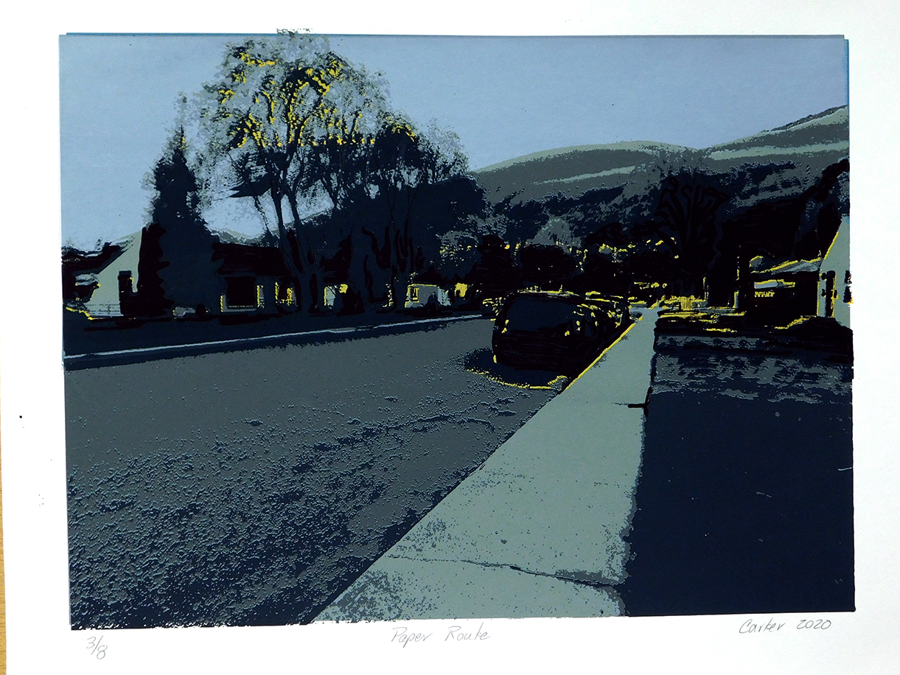
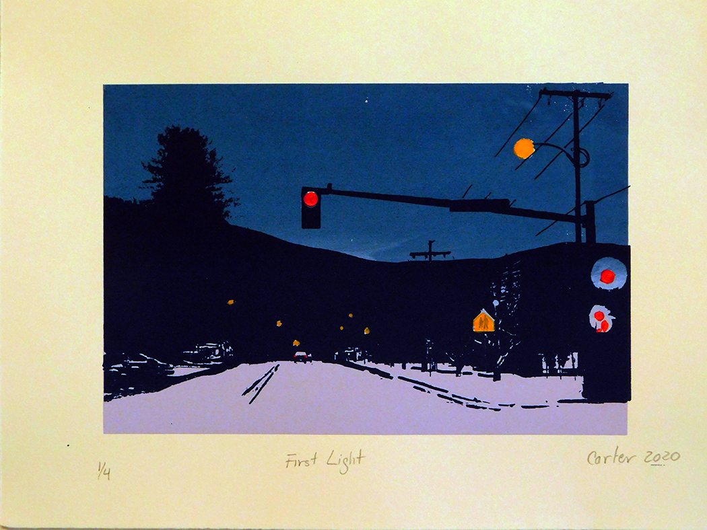

Riley’s favorite time of day is just before the sun begins to rise and his world is barely showing the outline of mountains, trees, and other shapes. It is the quiet time when most others are still sleeping so lights are off and houses are dark. Traffic is almost non-existent, just an occasional early commuter or service truck driving past. A couple times there was a doe with fawns crossing the street as he approached.
As a newspaper delivery boy, Riley, likes the almost empty streets so he can meander side to side on his bicycle as he flings the rolled papers onto porches or, occasionally, under a car or in the bushes. Because dogs are sleeping inside, he doesn’t have to worry about getting chased or nipped. Sometimes the early morning sprinklers give him a quick shower as he passes by.
Riley has been delivering newspapers for three years, and this early morning job has allowed him to buy his bright blue mountain bike he uses for deliveries and is now allowing him to save for a car. He is planning ahead as he will turn 16yrs in two years and will have his driver’s license then. He worries that the decreasing subscriptions to printed papers will interfere with his plans. His daily route takes him around the streets just south of the campus between Beckwith and South and Arthur and Mansfield. He can now complete deliveries in 45minutes; it took him almost an hour and a half when he started.
He loves to talk about the time he saw a black bear as he was delivering papers near campus. In the early light, it looked like a big dog. It was just ambling into an alley and as Riley passed by, he could see it sniffing and clawing at a garbage can that was brightly lighted by the nearby street light. Riley didn’t stop to see what it was doing and was glad it didn’t notice him.
If you are up early in the morning, just before the sun begins to rise over Mt. Sentinel, watch for Riley on his blue mountain bike. Paper boys, like print newspapers, may soon disappear.
 